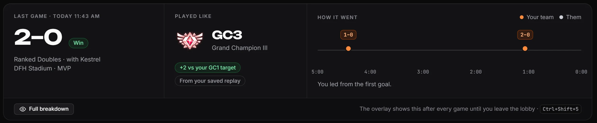
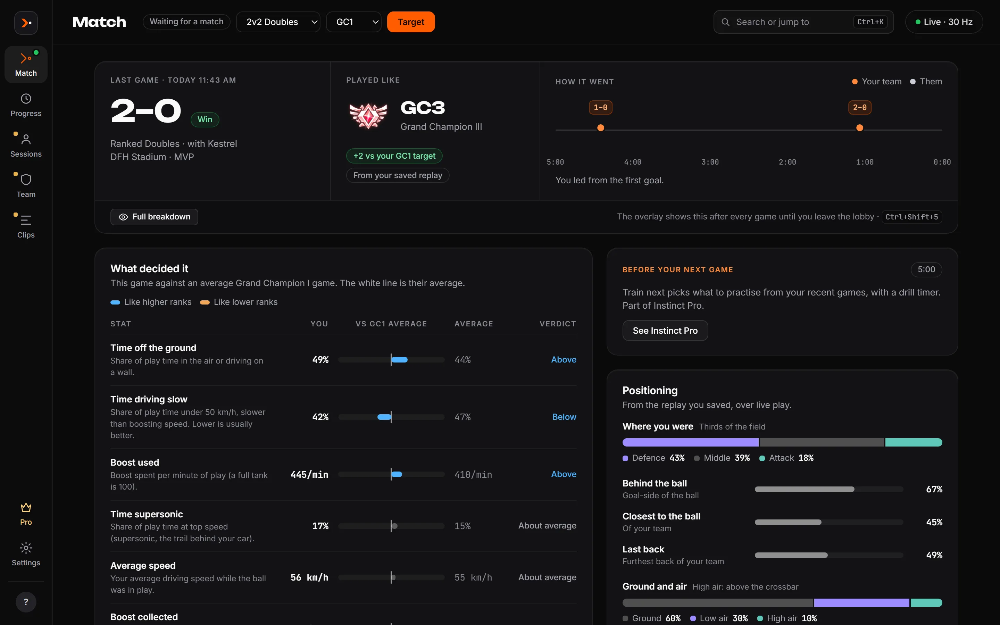
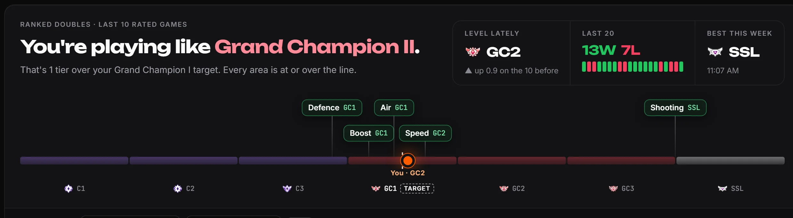

See what rank you're really playing like.
Instinct reads your match live and tells you which rank your game looks like. Between games it shows what decided it and what to practise next, so you stop guessing why you're stuck.
- Official Rocket League Stats API
- No mods, no memory reading
- Never presses keys, never types in chat
- Your data stays on your PC
Two minutes to set up. Then just play.
Install and run the setup check
One click turns on Rocket League's built-in Stats API, with a backup of your settings first. No admin rights needed.
Play like you always do
About 75 seconds into a match, a small overlay shows which rank your game looks like and how your speed, boost and air compare.
Read it between games
See what decided the game, how you're trending over your last ten, and the one thing worth practising before you queue again.
Playing like, not your MMR.
Your rank tells you where you've been. Playing like tells you how you're playing right now. It compares your game with tens of thousands of real ranked games and names the rank it looks like, live, in every playlist.
- Gap bars show your speed, boost and air against your target rank's average.
- Click-through overlay, Borderless or Windowed. Hide it with one hotkey.
- Works in Duel, Doubles, Standard, Hoops, Rumble, Dropshot and Snow Day.

After the whistle: score, what you played like and how the game went.
What actually decided it.
Every stat is compared with your target rank's average, in plain words: above, below, about average. Each one explains itself, so "time driving slow" means something.
- The stats that separated you from the rank you want.
- "Before your next game": what to practise, picked from your recent games.
- Save a replay in Rocket League and that match gets a sharper read and the full replay analysis: rotation, touches, shots, recoveries and mechanics, free.

Know where you really stand.
One game is noisy, so Instinct leads with your level lately: the last ten rated games. See yourself on the rank ladder next to your target, with your five areas (defence, air, boost, speed, shooting) placed on it.
- A chart of every game with rank bands and your trend.
- The one area to focus on this week.
- Every match kept on your PC.

Built on real games, and clear about its limits.
We'd rather tell you what the read can and can't do than oversell it.
real ranked games taught the Duel, Doubles and Standard engine what each rank looks like.
of the time, ten games average within one rank of a player's real rank, on players it never saw.
is how much one game's read moves. So judge a change over several games, never one.
The live Stats API doesn't send car positions, so the live overlay never claims to coach rotation. Positioning comes only from replays you save. What it can't see
Free gets you the read. Pro helps you act on it.
Everything in the overlay stays free. Instinct Pro adds the tools you use between games, from $2.99 a month. Try it free for 7 days.
Sessions
Every session by mode, how you played in each against your usual, and a live session strip in game. Spot the game where it starts to slip.
Train next
Free play drills picked from your recent games, with a timer, so practice time goes where it counts.
Full history and growth
Every match and session, not just the last 30 days, plus "vs your usual" after each game and your trend.
Teams
Your duo or trio's shared record, sessions you played together, and how each of you plays together vs apart.
Clips, share cards and more
Save the last 30 seconds with a hotkey, share cards, the layout editor, the phone companion and cloud sync across PCs.
The ones everyone asks first.
Can I get banned for using it?
Instinct only reads the Stats API, a feature Psyonix built into Rocket League to send live match data to programs on your own PC. It doesn't use BakkesMod, read game memory or inject code, never presses keys and never types in chat. Your account is still your responsibility under the game's rules; see the terms.
Is it really free?
Yes. The live overlay, Playing like, gap bars, the post-game breakdown, the full analysis of saved replays and your last 30 days of history are free, with no account needed. Instinct Pro is optional.
Does it work on console?
No. It needs Rocket League running on the same Windows 10 or 11 PC (Epic or Steam).
Find out what you're really playing like.
Free for Windows 10 and 11. Set up in two minutes, read your next game live.